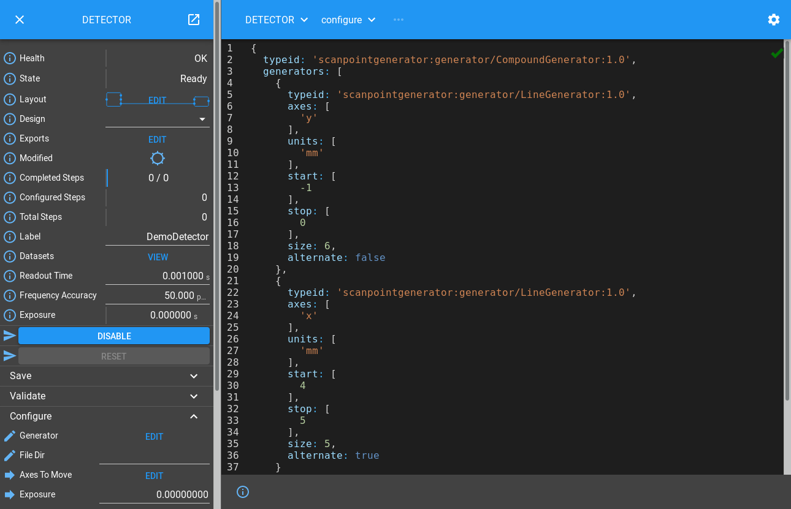
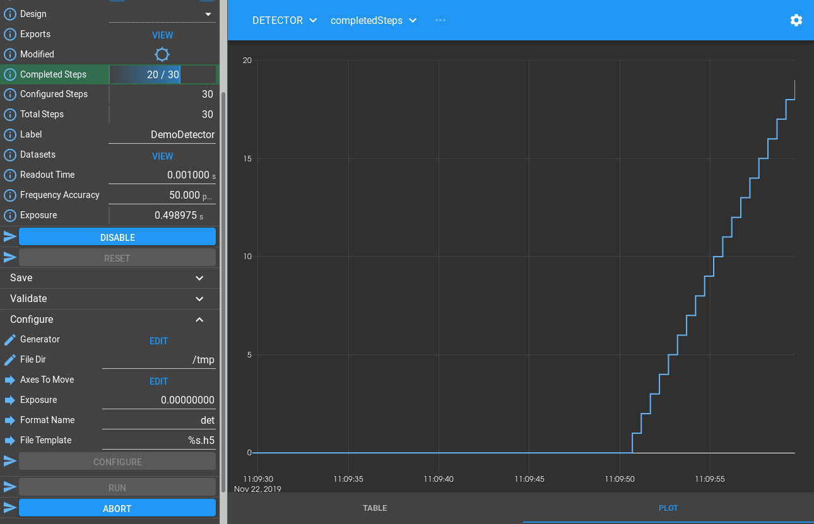

Detector Tutorial
You should already know how to create a Part that can be instantiated
multiple times in a ManagerController with each instance creating
a Block in the Device Layer below.
In the example we exposed a simple interface with a couple of
Methods to simulate a Motion Controller. We will now build an
interface that looks like a Detector, taking a scan specification, and writing
data to an HDF file. To do this, we will introduce a new configure/run interface
that will make using these detectors in a scan more straightforward. The
configure stage is where as much setup as possible is done, then the run stage
is a supervisory stage where the scan is performed.
Specifying Scan Points
If this Detector Block is going to simulate running a scan, we need to learn how to specify a scan. There are a number of pieces of information about each point in a scan that are needed by Malcolm:
The demand positions of a number of actuators representing where they should be at the mid-point of a detector frame. This is needed for step scans and continuous scans.
The demand positions of those actuators at the upper and lower bounds (start and end) of that detector frame. This is only needed for continuous scans where each detector frame is taken while the actuators were moving rather than a step scan where they are static.
The index in the data file that the frame should be stored. For grid based scans (like a snake scan) these will have the same dimensions as the demand positions. For non grid based scans (like a spiral scan) these will have less dimensions because the datapoints do not fit onto a regular grid.
The duration of the frame. This is needed for continuous scans and is the time taken to get from the lower to the upper bound.
The size of each index dimension and units for each actuator are also needed for file writing.
Rather than passing all this information in one large structure, a separate project called Scan Point Generator has been setup to create parameterized generators which work together to generate multi-dimensional scan paths. We will make our Detector Block understand these generators.
Creating Runnable Device Blocks
Let’s take a look at the Process Definition
./malcolm/modules/demo/DEMO-DETECTOR.yaml:
# Define a directory to store config in
- builtin.defines.tmp_dir:
name: config_dir
# Create some Blocks
- demo.blocks.detector_block:
mri: DETECTOR
config_dir: $(config_dir)
# Add a webserver
- web.blocks.web_server_block:
mri: WEB
Again, apart from the web server there is just one Block, specified in
./malcolm/modules/demo/blocks/detector_block.yaml:
- builtin.parameters.string:
name: mri
description: MRI for created block
- builtin.parameters.string:
name: config_dir
description: Where to store saved configs
- builtin.parameters.int32:
name: width
description: Width of the produced image
default: 160
- builtin.parameters.int32:
name: height
description: Height of the produced image
default: 120
- builtin.parameters.string:
name: label
description: Beamline specific label for the detector
default: DemoDetector
- builtin.parameters.string:
name: readout_time
description: Readout time of the detector
default: 0.001
- builtin.defines.docstring:
value: |
This block uses a demo FileWriter and exposes a Detector like interface
that can be controlled with a DetectorChildPart
- scanning.controllers.RunnableController:
mri: $(mri)
config_dir: $(config_dir)
description: |
Demo detector that writes HDF files for an x, y scan
- builtin.parts.LabelPart:
value: $(label)
- scanning.parts.DatasetTablePart:
name: DSET
- scanning.parts.ExposureDeadtimePart:
name: EXPOSURE
readout_time: $(readout_time)
min_exposure: 0.0001
- demo.parts.FileWritePart:
name: FW
width: $(width)
height: $(height)
We instantiate a DatasetTablePart to report the datasets that we will write
(see Datasets and Detectors),
a FileWritePart to write some dummy data to an HDF file, and then use a
RunnableController to construct our Block.
We also instantiate a LabelPart which simply allows us to give this detector
a human readable label (a couple of words long) that is suitable
for display on GUIs.
This produces a single DETECTOR Device Block.
Note
Unlike the previous example, there are no Child Blocks in the Hardware Layer. This is because we are making a cut down demo, in a real example like in the AreaDetector Tutorial we would have child Blocks and multiple parts to control them.
Controller for Runnable Device Blocks
As well as controlling child Blocks, our Block needs to respond to a
configure()/run() interface. A RunnableController implements this interface.
It inherits ManagerController, so has all the Attributes and Methods we
introduced in the Motion Tutorial, as well as the following Attributes:
Attribute |
Description |
|---|---|
|
Readback of the last completed ScanPointGenerator step number in the current scan. Also accepts Put when configured to seek to a different step in the scan |
|
The last configured step that will be complete when run() returns successfully |
|
The total number of steps contained in the current ScanPointGenerator.
This will be different to |
And the following Methods:
Method |
Description |
|---|---|
|
Check that a set of scan parameters are valid for a run |
|
Configure the device ready for a run |
|
Run a device where configure has already been called |
|
Abort the current operation |
|
Pause the current Run, reconfiguring around the last good step |
|
Resume a paused run |
It implements the following complicated looking state machine:
The main thing to get from this diagram is that the Block passes through a
number of states while it is being configure()d and run(), and these
states control the Methods that can be run at any time.
Adding functionality to a RunnableController
Now let’s see some of the Methods and Attributes that are created in our example:
The RunnableController contributes the configure and run Methods in a
similar way to previous examples, and the DatasetTablePart contributes a
datasets Attribute, but the FileWritePart doesn’t contribute any Attributes
or Methods to the Block. Instead, it registers functions with Hooks
on the Controller to execute arbitrary logic at the correct stage of
RunnableController.configure or RunnableController.run.
Hooking into configure()
We mentioned earlier that a Part can register hook functions.
Each hook function is called at at a specific phase of a specific Method
provided by the Controller. Lets take a look at the first
part of ./malcolm/modules/demo/parts/filewritepart.py to see how this
works:
import os
import time
import h5py
import numpy as np
from annotypes import Anno, add_call_types
from scanpointgenerator import Point
from malcolm.core import APartName, Part, PartRegistrar
from malcolm.modules import builtin, scanning
from ..util import interesting_pattern, make_gaussian_blob
with Anno("Width of detector image"):
AWidth = int
with Anno("Height of detector image"):
AHeight = int
# Datasets where we will write our data
DATA_PATH = "/entry/data"
SUM_PATH = "/entry/sum"
UID_PATH = "/entry/uid"
SET_PATH = "/entry/%s_set"
# How often we flush in seconds
FLUSH_PERIOD = 1
class FileWritePart(Part):
"""Minimal interface demonstrating a file writing detector part"""
def __init__(self, name: APartName, width: AWidth, height: AHeight) -> None:
super().__init__(name)
# Store input arguments
self._width = width
self._height = height
# The detector image we will modify for each image (0..255 range)
self._blob = make_gaussian_blob(width, height) * 255
# The hdf file we will write
self._hdf: h5py.File = None
# Configure args and progress info
self._exposure = 0.0
self._generator: scanning.hooks.AGenerator = None
self._completed_steps = 0
self._steps_to_do = 0
# How much to offset uid value from generator point
self._uid_offset = 0
def setup(self, registrar: PartRegistrar) -> None:
super().setup(registrar)
# Hooks
registrar.hook(scanning.hooks.ConfigureHook, self.on_configure)
registrar.hook(
(scanning.hooks.PostRunArmedHook, scanning.hooks.SeekHook), self.on_seek
)
registrar.hook(scanning.hooks.RunHook, self.on_run)
registrar.hook(
(scanning.hooks.AbortHook, builtin.hooks.ResetHook), self.on_reset
)
# Tell the controller to expose some extra configure parameters
registrar.report(scanning.hooks.ConfigureHook.create_info(self.on_configure))
# Allow CamelCase as these parameters will be serialized
# noinspection PyPep8Naming
@add_call_types
def on_configure(
self,
completed_steps: scanning.hooks.ACompletedSteps,
steps_to_do: scanning.hooks.AStepsToDo,
generator: scanning.hooks.AGenerator,
fileDir: scanning.hooks.AFileDir,
exposure: scanning.hooks.AExposure = 0.0,
formatName: scanning.hooks.AFormatName = "det",
fileTemplate: scanning.hooks.AFileTemplate = "%s.h5",
) -> scanning.hooks.UInfos:
"""On `ConfigureHook` create HDF file with datasets"""
# Store args
self._completed_steps = completed_steps
self._steps_to_do = steps_to_do
self._generator = generator
self._uid_offset = 0
self._exposure = exposure
# Work out where to write the file
filename = fileTemplate % formatName
filepath = os.path.join(fileDir, filename)
# Make the HDF file
self._hdf = self._create_hdf(filepath)
# Tell everyone what we're going to make
infos = list(self._create_infos(formatName, filename))
return infos
Again we override __init__, but after initializing some
protected variables we have some Hook statements in the setup()
function. These call hook() to register a function to be
run with one or more Hook classes. A Controller defines a a number of Hooks
that define what methods of a Part will be run during a particular Method. For
example, we are hooking our on_configure() method to the ConfigureHook.
Let’s take a look at its documentation:
- class malcolm.modules.scanning.hooks.ConfigureHook(part: Anno(name='APart', typ=<class 'malcolm.core.part.Part'>, description='The part that has attached to the Hook'), context: Anno(name='AContext', typ=<class 'malcolm.core.context.Context'>, description='Context that should be used to perform operations on child blocks'), completed_steps: Anno(name='ACompletedSteps', typ=<class 'int'>, description='Number of steps already completed'), steps_to_do: Anno(name='AStepsToDo', typ=<class 'int'>, description='Number of steps we should configure for'), part_info: Anno(name='APartInfo', typ=(<class 'str'>, annotypes._array.Array[malcolm.core.info.Info]), description='The Infos returned from other Parts'), generator: Anno(name='AGenerator', typ=<class 'scanpointgenerator.core.compoundgenerator.CompoundGenerator'>, description='Generator instance providing specification for scan'), axesToMove: Anno(name='AAxesToMove', typ=<class 'str'>, description='List of axes in inner dimension of generator that should be moved'), breakpoints: Anno(name='ABreakpoints', typ=<class 'numpy.int32'>, description='List of points at which the run will return in Armed state'), **kwargs: Any)[source]
Called at configure() to configure child block for a run
- Parameters
part (Part) – The part that has attached to the Hook
context (Context) – Context that should be used to perform operations on child blocks
completed_steps (int) – Number of steps already completed
steps_to_do (int) – Number of steps we should configure for
part_info – The Infos returned from other Parts
generator (CompoundGenerator) – Generator instance providing specification for scan
axesToMove (str) – List of axes in inner dimension of generator that should be moved
breakpoints (int32) – List of points at which the run will return in Armed state
What happens in practice is that when DETECTOR.configure() is called, all
the functions hooked to ConfigureHook will be called concurrently. They will
each be called with the arguments that they ask for (as long as its name appears
in the documentation for the Hook).
See also
State Sets and Hooks contains more information about which Hooks are run in each state transition
Passing Infos back to the Controller
You may have noticed that on_configure() takes extra fileDir,
formatName and fileTemplate arguments that are not documented in the
Hook. How does the Controller know to ask for them at configure and pass them
down to us? Well in setup() we report an Info. This is a way of telling
our parent Controller something about us, either in response to a Hook, or
asynchronously using PartRegistrar.report. In this case, we call
ConfigureHook.create_info which scans our on_configure method for extra
arguments and puts them in a ConfigureParamsInfo object that we can
report() back. The docstring for this info explains what the Controller
will do with this:
- class malcolm.modules.scanning.infos.ConfigureParamsInfo(metas: Dict[str, malcolm.core.models.VMeta], required: List[str], defaults: Dict[str, Any])[source]
Info about the parameters that should be passed to the Part in configure. The Controller will validate these when Block.configure() is called, and pass them to all Parts that have registered interest in them.
- Parameters
metas – Metas for the extra parameters
required – List of required parameters
defaults – Default values for parameters
After we have created our HDF file in configure, we make some more infos in
_create_infos:
def _create_infos(self, detector_name, filename):
# Main dataset
yield scanning.infos.DatasetProducedInfo(
name=f"{detector_name}.data",
filename=filename,
type=scanning.util.DatasetType.PRIMARY,
rank=len(self._generator.shape) + 2,
path=DATA_PATH,
uniqueid=UID_PATH,
)
# Sum
yield scanning.infos.DatasetProducedInfo(
name=f"{detector_name}.sum",
filename=filename,
type=scanning.util.DatasetType.SECONDARY,
rank=len(self._generator.shape) + 2,
path=SUM_PATH,
uniqueid=UID_PATH,
)
# Add an axis for each setpoint
for dim in self._generator.axes:
yield scanning.infos.DatasetProducedInfo(
name=f"{dim}.value_set",
filename=filename,
type=scanning.util.DatasetType.POSITION_SET,
rank=1,
path=SET_PATH % dim,
uniqueid="",
)
This time they describe the datasets that we are going to produce. These will be used by the DatasetTablePart to put them in an Attribute that can be read by the client expecting a scan. The docstring for this info explains this:
- class malcolm.modules.scanning.infos.DatasetProducedInfo(name: str, filename: str, type: malcolm.modules.scanning.infos.DatasetType, rank: int, path: str, uniqueid: str)[source]
Declare that we will write the following dataset to file
- Parameters
name – Dataset name
filename – Filename relative to the fileDir we were given
type – What NeXuS dataset type it produces
rank – The rank of the dataset including generator dims
path – The path of the dataset within the file
uniqueid – The path of the UniqueID dataset within the file
In our case we will produce a main dataset, with a detector of the dimensions given when we instantiated the part, a sum dataset which will provide a suitable single point for each detector frame to live visualize the scan, and the axis setpoints of everything that moves in the scan.
Hooking into run()
We also hooked our on_run() method in __init__. Let’s take a look at
what it does:
@add_call_types
def on_run(self, context: scanning.hooks.AContext) -> None:
"""On `RunHook` record where to next take data"""
# Start time so everything is relative
end_of_exposure = time.time() + self._exposure
last_flush = end_of_exposure
assert self.registrar, "Part has no registrar"
for i in range(
self._completed_steps, self._completed_steps + self._steps_to_do
):
# Get the point we are meant to be scanning
point = self._generator.get_point(i)
# Simulate waiting for an exposure and writing the data
wait_time = end_of_exposure - time.time()
context.sleep(wait_time)
self.log.debug(f"Writing data for point {i}")
self._write_data(point, i)
# Flush the datasets if it is time to
if time.time() - last_flush > FLUSH_PERIOD:
last_flush = time.time()
self._flush_datasets()
# Schedule the end of the next exposure
end_of_exposure += point.duration
# Update the point as being complete
self.registrar.report(scanning.infos.RunProgressInfo(i + 1))
# Do one last flush and then we're done
self._flush_datasets()
This is hooked to the RunHook. Let’s take a look at its documentation:
- class malcolm.modules.scanning.hooks.RunHook(part: Anno(name='APart', typ=<class 'malcolm.core.part.Part'>, description='The part that has attached to the Hook'), context: Anno(name='AContext', typ=<class 'malcolm.core.context.Context'>, description='Context that should be used to perform operations on child blocks'), **kwargs: Any)[source]
Called at run() to start the configured steps running
Walking through the code we can see that we are iterating through each of the
step indexes that we need to produce, getting a scanpointgenerator.Point
object for each one. We then write some suitable data based on this point to
our file. After this we work out how long we need to wait until the next
position is to be produced, then do an interruptable sleep. It is important that
we use the context parameter to do this, because if the Controller is
aborted, it will tell every Context it passed out to hooked functions to
abort. Finally we report() a RunProgressInfo with the
current step number so the client knows how much of the scan is complete.
Important
Step numbers in Malcolm are 1-indexed, so a value of 0 means no steps completed.
The Controller will use all of the RunProgressInfo instances to work out
how far the actual scan has progressed, and report it in the Block’s
currentStep Attribute.
Hooking into seek(), abort() and reset()
The on_seek() Method stores completed_steps, and steps_to_do, then calculates
a new UID offset so that any new frames are guaranteed to have an ID that has
never been written before:
@add_call_types
def on_seek(
self,
completed_steps: scanning.hooks.ACompletedSteps,
steps_to_do: scanning.hooks.AStepsToDo,
) -> None:
"""On `SeekHook`, `PostRunArmedHook` record where to next take data"""
# Skip the uid so it is guaranteed to be unique
self._uid_offset += self._completed_steps + self._steps_to_do - completed_steps
self._completed_steps = completed_steps
self._steps_to_do = steps_to_do
It is hooked into two Hooks:
- class malcolm.modules.scanning.hooks.SeekHook(part: Anno(name='APart', typ=<class 'malcolm.core.part.Part'>, description='The part that has attached to the Hook'), context: Anno(name='AContext', typ=<class 'malcolm.core.context.Context'>, description='Context that should be used to perform operations on child blocks'), completed_steps: Anno(name='ACompletedSteps', typ=<class 'int'>, description='Number of steps already completed'), steps_to_do: Anno(name='AStepsToDo', typ=<class 'int'>, description='Number of steps we should configure for'), part_info: Anno(name='APartInfo', typ=(<class 'str'>, annotypes._array.Array[malcolm.core.info.Info]), description='The Infos returned from other Parts'), generator: Anno(name='AGenerator', typ=<class 'scanpointgenerator.core.compoundgenerator.CompoundGenerator'>, description='Generator instance providing specification for scan'), axesToMove: Anno(name='AAxesToMove', typ=<class 'str'>, description='List of axes in inner dimension of generator that should be moved'), **kwargs: Any)[source]
Called at seek() or at the end of pause() to reconfigure for a different number of completed_steps
- Parameters
part (Part) – The part that has attached to the Hook
context (Context) – Context that should be used to perform operations on child blocks
completed_steps (int) – Number of steps already completed
steps_to_do (int) – Number of steps we should configure for
part_info – The Infos returned from other Parts
generator (CompoundGenerator) – Generator instance providing specification for scan
axesToMove (str) – List of axes in inner dimension of generator that should be moved
- class malcolm.modules.scanning.hooks.PostRunArmedHook(part: Anno(name='APart', typ=<class 'malcolm.core.part.Part'>, description='The part that has attached to the Hook'), context: Anno(name='AContext', typ=<class 'malcolm.core.context.Context'>, description='Context that should be used to perform operations on child blocks'), completed_steps: Anno(name='ACompletedSteps', typ=<class 'int'>, description='Number of steps already completed'), steps_to_do: Anno(name='AStepsToDo', typ=<class 'int'>, description='Number of steps we should configure for'), part_info: Union[Anno(name='APartInfo', typ=(<class 'str'>, annotypes._array.Array[malcolm.core.info.Info]), description='The Infos returned from other Parts'), Mapping[str, Sequence[malcolm.core.info.Info]]], generator: Anno(name='AGenerator', typ=<class 'scanpointgenerator.core.compoundgenerator.CompoundGenerator'>, description='Generator instance providing specification for scan'), axesToMove: Anno(name='AAxesToMove', typ=<class 'str'>, description='List of axes in inner dimension of generator that should be moved'), **kwargs: Any)[source]
Called at the end of run() when there are more steps to be run
- Parameters
part (Part) – The part that has attached to the Hook
context (Context) – Context that should be used to perform operations on child blocks
completed_steps (int) – Number of steps already completed
steps_to_do (int) – Number of steps we should configure for
part_info – The Infos returned from other Parts
generator (CompoundGenerator) – Generator instance providing specification for scan
axesToMove (str) – List of axes in inner dimension of generator that should be moved
Which means it will be called at when pause() is called, and when Malcolm
has been asked to setup the next phase of a scan where it only moves a subset
of the axes in the generator.
The on_reset() Method just closes the HDF file if it isn’t already closed:
@add_call_types
def on_reset(self) -> None:
"""On `AbortHook`, `ResetHook` close HDF file if it exists"""
if self._hdf:
self._hdf.close()
self._hdf = None
It again is hooked into two Hooks:
- class malcolm.modules.scanning.hooks.AbortHook(part: Anno(name='APart', typ=<class 'malcolm.core.part.Part'>, description='The part that has attached to the Hook'), context: Anno(name='AContext', typ=<class 'malcolm.core.context.Context'>, description='Context that should be used to perform operations on child blocks'), **kwargs: Any)[source]
Called at abort() to stop the current scan
- class malcolm.modules.builtin.hooks.ResetHook(part: Anno(name='APart', typ=<class 'malcolm.core.part.Part'>, description='The part that has attached to the Hook'), context: Anno(name='AContext', typ=<class 'malcolm.core.context.Context'>, description='Context that should be used to perform operations on child blocks'), **kwargs: Any)[source]
Called at reset() to reset all parts to a known good state
These will be called when reset() or abort() is called on the Block.
Running the demo
Let’s run up the example and give it a go:
[me@mypc pymalcolm]$ pipenv run imalcolm malcolm/modules/demo/DEMO-DETECTOR.yaml
Loading malcolm...
Python 3.7.2 (default, Jan 20 2020, 11:03:41)
Type 'copyright', 'credits' or 'license' for more information
IPython 7.19.0 -- An enhanced Interactive Python. Type '?' for help.
Welcome to iMalcolm.
self.mri_list:
['COUNTERX', 'COUNTERY', 'TICKER', 'WEB']
# To create a view of an existing Block
block = self.block_view("<mri>")
# To create a proxy of a Block in another Malcolm
self.make_proxy("<client_comms_mri>", "<mri>")
block = self.block_view("<mri>")
# To view state of Blocks in a GUI
!firefox localhost:8008
In [1]:
Then enter:
In [1]: from scanpointgenerator import LineGenerator, CompoundGenerator
In [2]: from scanpointgenerator.plotgenerator import plot_generator
In [3]: yline = LineGenerator("y", "mm", -1, 0, 6)
In [4]: xline = LineGenerator("x", "mm", 4, 5, 5, alternate=True)
In [5]: generator = CompoundGenerator([yline, xline], [], [], duration=0.5)
We can then see what this generator looks like:
In [6]: plot_generator(generator)
What we have done here is set up a scan that is 6 rows in y and 5 columns in x. The x value will snake forwards and backwards, and the y value will increase at the end of each x row. We have told it that each scan point should last for 0.5 seconds, which should give us enough time to see the ticks. If this is the scan that we wanted to do then we can either configure from the terminal, or dump the JSON so we can use the GUI. Let’s do the latter:
In [7]: from annotypes import json_encode
In [8]: json_encode(generator)
Out[8]: '{"typeid": "scanpointgenerator:generator/CompoundGenerator:1.0", "generators": [{"typeid": "scanpointgenerator:generator/LineGenerator:1.0", "axes": ["y"], "units": ["mm"], "start": [0.0], "stop": [1.0], "size": 6, "alternate": false}, {"typeid": "scanpointgenerator:generator/LineGenerator:1.0", "axes": ["x"], "units": ["mm"], "start": [0.0], "stop": [1.0], "size": 5, "alternate": true}], "excluders": [], "mutators": [], "duration": 0.5, "continuous": true}'
Then we can open http://localhost:8008/gui/DETECTOR to see the DETECTOR Block on the left. If we expand the Configure method and click Edit by the Generator field we can paste in our JSON:
If we set fileDir to “/tmp”, then click Configure, we will see the State change
to Armed. We can then click on the “VIEW” button next to “Datasets” to see
what the detector will write. Here we see that it will make a primary dataset
in (containing detector data) /entry/data, and a secondary dataset
(containing summary data calculated from the detector data) /entry/sum. It
will also write position_set datasets for x and y containing the
generator positions to /entry/x_set and /entry/y_set. All of these
will be written to a file called det.h5 in the fileDir:
If we click on the info icon next to the “Completed Steps”, and then select the Plot tab, then click the “Run” button on the left pane we will see the scan be performed:
We can then view the data that the detector wrote from our iPython terminal. We read the HDF file we have produced, copy the dataset, close the file, and check the shape of the dataset to see that it does indeed have rank 4:
In [13]: import h5py
In [10]: with h5py.File("/tmp/det.h5") as f:
...: im = f["/entry/sum"][:]
...:
In [11]: im.shape
Out[11]: (6, 5, 1, 1)
The sum dataset has the same rank as the detector data, so we need to squash those last two dimensions down so that we can plot it. We do that using the reshape function, then we show the resulting (6, 5) dataset:
In [12]: from pylab import imshow, show
In [13]: imshow(im.reshape(im.shape[:2]))
Out[13]: <matplotlib.image.AxesImage at 0x7f11a300b090>
In [14]: show()
From here you can try modifying the generator to make a bigger, faster scan, pressing Configure then Run again.
Conclusion
This tutorial has given us an understanding of how scans are specified in Malcolm, the configure/run State Machine that Malcolm implements, and how Parts can register code to run at different phases of a Controller. In the next tutorial we will see how to create a Block in the Scan Layer to co-ordinate a detector and a motion controller.